<!DOCTYPE HTML PUBLIC "-//W3C//DTD HTML 4.01 Transitional//EN">
<html>
<head>
<META http-equiv="Content-Type" content="text/html; charset=UTF-8">
<!--
This HTML was auto-generated from MATLAB code.
To make changes, update the MATLAB code and republish this document.
      -->
<title>eel3135_lab07_skeleton</title>
<meta name="generator" content="MATLAB 24.1">
<link rel="schema.DC" href="http://purl.org/dc/elements/1.1/">
<meta name="DC.date" content="2025-03-24">
<meta name="DC.source" content="eel3135_lab07_skeleton.m">
<style type="text/css">
html,body,div,span,applet,object,iframe,h1,h2,h3,h4,h5,h6,p,blockquote,pre,a,abbr,acronym,address,big,cite,code,del,dfn,em,font,img,ins,kbd,q,s,samp,small,strike,strong,tt,var,b,u,i,center,dl,dt,dd,ol,ul,li,fieldset,form,label,legend,table,caption,tbody,tfoot,thead,tr,th,td{margin:0;padding:0;border:0;outline:0;font-size:100%;vertical-align:baseline;background:transparent}body{line-height:1}ol,ul{list-style:none}blockquote,q{quotes:none}blockquote:before,blockquote:after,q:before,q:after{content:'';content:none}:focus{outine:0}ins{text-decoration:none}del{text-decoration:line-through}table{border-collapse:collapse;border-spacing:0}

html { min-height:100%; margin-bottom:1px; }
html body { height:100%; margin:0px; font-family:Arial, Helvetica, sans-serif; font-size:10px; color:#000; line-height:140%; background:#fff none; overflow-y:scroll; }
html body td { vertical-align:top; text-align:left; }

h1 { padding:0px; margin:0px 0px 25px; font-family:Arial, Helvetica, sans-serif; font-size:1.5em; color:#d55000; line-height:100%; font-weight:normal; }
h2 { padding:0px; margin:0px 0px 8px; font-family:Arial, Helvetica, sans-serif; font-size:1.2em; color:#000; font-weight:bold; line-height:140%; border-bottom:1px solid #d6d4d4; display:block; }
h3 { padding:0px; margin:0px 0px 5px; font-family:Arial, Helvetica, sans-serif; font-size:1.1em; color:#000; font-weight:bold; line-height:140%; }

a { color:#005fce; text-decoration:none; }
a:hover { color:#005fce; text-decoration:underline; }
a:visited { color:#004aa0; text-decoration:none; }

p { padding:0px; margin:0px 0px 20px; }
img { padding:0px; margin:0px 0px 20px; border:none; }
p img, pre img, tt img, li img, h1 img, h2 img { margin-bottom:0px; }

ul { padding:0px; margin:0px 0px 20px 23px; list-style:square; }
ul li { padding:0px; margin:0px 0px 7px 0px; }
ul li ul { padding:5px 0px 0px; margin:0px 0px 7px 23px; }
ul li ol li { list-style:decimal; }
ol { padding:0px; margin:0px 0px 20px 0px; list-style:decimal; }
ol li { padding:0px; margin:0px 0px 7px 23px; list-style-type:decimal; }
ol li ol { padding:5px 0px 0px; margin:0px 0px 7px 0px; }
ol li ol li { list-style-type:lower-alpha; }
ol li ul { padding-top:7px; }
ol li ul li { list-style:square; }

.content { font-size:1.2em; line-height:140%; padding: 20px; }

pre, code { font-size:12px; }
tt { font-size: 1.2em; }
pre { margin:0px 0px 20px; }
pre.codeinput { padding:10px; border:1px solid #d3d3d3; background:#f7f7f7; }
pre.codeoutput { padding:10px 11px; margin:0px 0px 20px; color:#4c4c4c; }
pre.error { color:red; }

@media print { pre.codeinput, pre.codeoutput { word-wrap:break-word; width:100%; } }

span.keyword { color:#0000FF }
span.comment { color:#228B22 }
span.string { color:#A020F0 }
span.untermstring { color:#B20000 }
span.syscmd { color:#B28C00 }
span.typesection { color:#A0522D }

.footer { width:auto; padding:10px 0px; margin:25px 0px 0px; border-top:1px dotted #878787; font-size:0.8em; line-height:140%; font-style:italic; color:#878787; text-align:left; float:none; }
.footer p { margin:0px; }
.footer a { color:#878787; }
.footer a:hover { color:#878787; text-decoration:underline; }
.footer a:visited { color:#878787; }

table th { padding:7px 5px; text-align:left; vertical-align:middle; border: 1px solid #d6d4d4; font-weight:bold; }
table td { padding:7px 5px; text-align:left; vertical-align:top; border:1px solid #d6d4d4; }


  </style>
</head>
<body>
<div class="content">
<h2>Contents</h2>
<div>
<ul>
<li>
<a href="#1">QUESTION 2</a>
</li>
<li>
<a href="#2">QUESTION 2: Z-TRANSFORM</a>
</li>
<li>
<a href="#3">2 (a) PLOT IMPULSE RESPONSE AND POLE-ZERO PLOT</a>
</li>
<li>
<a href="#4">2 (b) PLOT IMPULSE RESPONSE AND POLE-ZERO PLOT</a>
</li>
<li>
<a href="#5">2 (c) PLOT IMPULSE RESPONSE AND POLE-ZERO PLOT</a>
</li>
<li>
<a href="#6">2 (d) PLOT IMPULSE RESPONSE AND POLE-ZERO PLOT</a>
</li>
<li>
<a href="#7">2 (e) PLOT IMPULSE RESPONSE AND POLE-ZERO PLOT</a>
</li>
<li>
<a href="#8">2 (f) PLOT IMPULSE RESPONSE AND POLE-ZERO PLOT</a>
</li>
<li>
<a href="#9">2 (g) PLOT IMPULSE RESPONSE AND POLE-ZERO PLOT</a>
</li>
<li>
<a href="#10">2 (h) PLOT IMPULSE RESPONSE AND POLE-ZERO PLOT</a>
</li>
<li>
<a href="#11">QUESTION 3: MORE Z-TRANSFORM</a>
</li>
<li>
<a href="#12">3 (a) ANSWER QUESTION</a>
</li>
<li>
<a href="#13">3 (b) ANSWER QUESTION</a>
</li>
<li>
<a href="#14">3 (c) ANSWER QUESTION</a>
</li>
<li>
<a href="#15">3 (d) ANSWER QUESTION</a>
</li>
<li>
<a href="#16">3 (e) ANSWER QUESTION</a>
</li>
<li>
<a href="#17">3 (f) ANSWER QUESTION</a>
</li>
<li>
<a href="#18">QUESTION 4: LOAN DIFFERENCE EQUATION</a>
</li>
<li>
<a href="#19">4 (a) PLOT OUTPUT AND POLE-ZERO PLOT</a>
</li>
<li>
<a href="#20">4 (b) ANSWER QUESTION</a>
</li>
<li>
<a href="#21">4 (c) PLOT OUTPUT AND POLE-ZERO PLOT</a>
</li>
<li>
<a href="#22">4 (d) ANSWER QUESTION</a>
</li>
<li>
<a href="#23">4 (e) ANSWER QUESTION</a>
</li>
<li>
<a href="#24">4 (f) PLOT OUTPUT AND POLE-ZERO PLOT</a>
</li>
<li>
<a href="#25">4 (g) ANSWER QUESTION</a>
</li>
<li>
<a href="#26">ALL FUNCTIONS SUPPORTING THIS CODE %% % ==================================================================</a>
</li>
</ul>
</div>
<h2 id="1">QUESTION 2</h2>
<p>DO NOT REMOVE THE LINE BELOW MAKE SURE 'eel3135_lab07_comment.m' IS IN THE SAME DIRECTORY AS THIS FILE</p>
<pre class="codeinput">clear; close <span class="string">all</span>; clc;
type(<span class="string">'eel3135_lab07_comment.m'</span>)
</pre>
<pre class="codeoutput">
%% QUESTION #1 COMMENTING
clear
close all
clc

%% DEFINE FILTER AND INPUT
N = 100;
n = 0:(N-1);

% FILTER
b = (1/4)*[1 1 1]; % Numerator Coefficients of filter's transfer function, which is the coefficients of the input sequence in the difference equation
a = [1 -1 0.5 0.25]; % Denominator coefficients of filter's transfer function, which is the coefficients of output sequence in difference equation
% &lt;-- Answer: What is the numerator of this filter's transfer function?
% The numerator of the filter's transfer function is (1/4) * [1 1 1] or
% (1/4) + (1/4)*z^-1 + (1/4)*z^-2

% &lt;-- Answer: What is the denominator of this filter's transfer function?
% The denominator fo the filter transfer function is [1 -1 0.5 0.25] or 1 -
% z^-1 + 0.5*z^-2 + 0.25*z^-3

% Hint: look a later when we implement the filter with the "filter" command
%  (use "help filter" to see what it does)
%

% INPUT 1
x1 = zeros(N,1); 
x1(1) = 1; % Creates impulse input at n = 0
% &lt;-- Answer: (True or False) x1 is an impulse input? If false,
% describe the input.
% True. x1 is an impulse input becuase it is a sequence of zeros with a
% single one at the first sample, definition of impulse

% INPUT 2
x2 = zeros(N,1); 
x2(1:12)  = cos(3*pi/2*   n(1:12)); % First segment of x2
x2(13:24) = cos(pi/4*   n(13:24)); % Second segment of x2
x2(25:36) = cos(2*pi*   n(25:36)); % Third segment of x2
x2(37:48) = cos(3*pi/4* n(37:48)); % Fourth segment of x2
x2(49:60) = cos(pi*     n(49:60)); % Fifth segment of x2
x2(61:72) = cos(pi/8* n(61:72)); % Sixth segment of x2
x2(73:84) = cos(pi/2*   n(73:84)); % Seventh segment of x2
% &lt;-- Answer: (True or False) x2 is an single frequency input? If 
% false, describe the input.
% False. x2 is not a signle frequency input, it is a cobination of multiple
% cosine signals at different frequencies over time where each segment of
% x2 has a different frequency.

%% DEFINE AND PLOT OUTPUT

% OUTPUT 1
y1 = filter(b,a,x1);

% OUTPUT 2
y2 = filter(b,a,x2);


% PLOT THE IMPULSE RESPONSE AND DTFT
figure(1)
subplot(311)
stem(n,x1)
xlabel('Time (Samples)')
ylabel('x_1[n]')
subplot(312)
stem(n,y1)
xlabel('Time (Samples)')
ylabel('y_1[n]')
subplot(313)
pzplot(b,a)
axis equal

% PLOT THE IMPULSE RESPONSE AND DTFT
figure(2)
subplot(311)
stem(n,x2)
xlabel('Time (Samples)')
ylabel('x_2[n]')
subplot(312)
stem(n,y2)
xlabel('Time (Samples)')
ylabel('y_2[n]')
subplot(313)
pzplot(b,a)
axis equal


% ==================================================================
% NOTE: YOU DO NOT NEED TO ADD COMMENTS IN THE CODE BELOW. WE JUST 
% NEEDED POLE-ZERO PLOTTING CODE AND THUS WROTE IT. 
% ==================================================================
function pzplot(b,a)
% PZPLOT(B,A)  plots the pole-zero plot for the filter described by
% vectors A and B.  The filter is a "Direct Form II Transposed"
% implementation of the standard difference equation:
% 
%    a(1)*y(n) = b(1)*x(n) + b(2)*x(n-1) + ... + b(nb+1)*x(n-nb)
%                          - a(2)*y(n-1) - ... - a(na+1)*y(n-na)
% 

    % MODIFY THE POLYNOMIALS TO FIND THE ROOTS 
    b1 = zeros(max(length(a),length(b)),1); % Need to add zeros to get the right roots
    a1 = zeros(max(length(a),length(b)),1); % Need to add zeros to get the right roots
    b1(1:length(b)) = b;    % New a with all values
    a1(1:length(a)) = a;    % New a with all values

    % FIND THE ROOTS OF EACH POLYNOMIAL AND PLOT THE LOCATIONS OF THE ROOTS
    h1 = plot(real(roots(a1)), imag(roots(a1)));
    hold on;
    h2 = plot(real(roots(b1)), imag(roots(b1)));
    hold off;

    % DRAW THE UNIT CIRCLE
    circle(0,0,1)
    
    % MAKE THE POLES AND ZEROS X's AND O's
    set(h1, 'LineStyle', 'none', 'Marker', 'x', 'MarkerFaceColor','none', 'linewidth', 1.5, 'markersize', 8); 
    set(h2, 'LineStyle', 'none', 'Marker', 'o', 'MarkerFaceColor','none', 'linewidth', 1.5, 'markersize', 8); 
    axis equal;
    
    % DRAW VERTICAL AND HORIZONTAL LINES
    xminmax = xlim();
    yminmax = ylim();
    line([xminmax(1) xminmax(2)],[0 0], 'linestyle', ':', 'linewidth', 0.5, 'color', [1 1 1]*.1)
    line([0 0],[yminmax(1) yminmax(2)], 'linestyle', ':', 'linewidth', 0.5, 'color', [1 1 1]*.1)
    
    % ADD LABELS AND TITLE
    xlabel('Real Part')
    ylabel('Imaginary Part')
    title('Pole-Zero Plot')
    
end


function circle(x,y,r)
% CIRCLE(X,Y,R)  draws a circle with horizontal center X, vertical center
% Y, and radius R. 
%
    
    % ANGLES TO DRAW
    ang=0:0.01:2*pi; 
    
    % DEFINE LOCATIONS OF CIRCLE
    xp=r*cos(ang);
    yp=r*sin(ang);
    
    % PLOT CIRCLE
    hold on;
    plot(x+xp,y+yp, ':', 'linewidth', 0.5, 'color', [1 1 1]*.1);
    hold off;
    
end
</pre>
<h2 id="2">QUESTION 2: Z-TRANSFORM</h2>
<h2 id="3">2 (a) PLOT IMPULSE RESPONSE AND POLE-ZERO PLOT</h2>
<pre class="codeinput">
<span class="comment">% Define transfer function H(z) = 0.75 * z^(-4)</span>
b1 = [0 0 0 0 0.75]; <span class="comment">% Numerator (delayed by 4 samples)</span>
a1 = [1]; <span class="comment">% Denominator</span>

<span class="comment">% Generate impulse response</span>
N = 100;
n = 0:(N-1);
x1 = zeros(N,1);
x1(1) = 1; <span class="comment">% Impulse response</span>
impulse_response_a = filter(b1, a1, x1); <span class="comment">% Output using filter function</span>

<span class="comment">% Plot impulse response</span>
figure;
subplot(2, 1, 1);
stem(impulse_response_a);
title(<span class="string">'Impulse Response for H(z) = 0.75z^{-4}'</span>);
xlabel(<span class="string">'Time (samples)'</span>);
ylabel(<span class="string">'h[n]'</span>);

<span class="comment">% Plot Pole-Zero plot</span>
subplot(2, 1, 2);
pzplot(b1, a1);
title(<span class="string">'Pole-Zero Plot for H(z) = 0.75z^{-4}'</span>);
</pre>
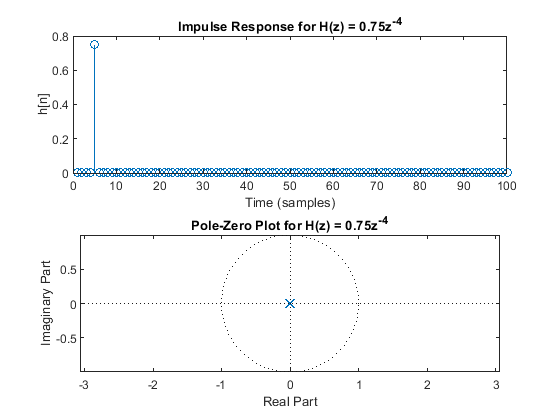 <h2 id="4">2 (b) PLOT IMPULSE RESPONSE AND POLE-ZERO PLOT</h2>
<pre class="codeinput">
<span class="comment">% Define transfer function H(z) = 1 + z^(-1)</span>
b2 = [1 1]; <span class="comment">% Numerator (1 + z^-1)</span>
a2 = [1]; <span class="comment">% Denominator</span>
impulse_response_b = filter(b2, a2, x1); <span class="comment">% Generate impulse response</span>

<span class="comment">% Plot impulse response</span>
figure(2);
subplot(2,1,1);
stem(n, impulse_response_b);
xlabel(<span class="string">'Time (Samples)'</span>);
ylabel(<span class="string">'h[n]'</span>);
title(<span class="string">'Impulse Response for H(z) = 1 + z^{-1}'</span>);

<span class="comment">% Plot Pole-Zero plot</span>
subplot(2,1,2);
pzplot(b2, a2);
title(<span class="string">'Pole-Zero Plot for H(z) = 1 + z^{-1}'</span>);
</pre>
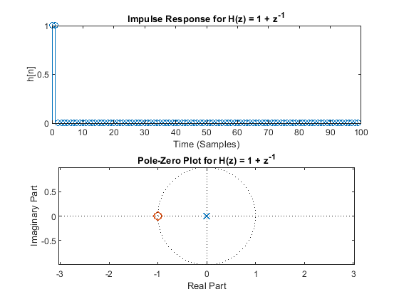 <h2 id="5">2 (c) PLOT IMPULSE RESPONSE AND POLE-ZERO PLOT</h2>
<pre class="codeinput">
<span class="comment">% Define the transfer function H(z) = 1 + 2z^(-1) + 3z^(-2) + 4z^(-3)</span>
b3 = [1 2 3 4];  <span class="comment">% Numerator</span>
a3 = [1];        <span class="comment">% Denominator (no feedback)</span>
y3 = filter(b3, a3, x1); <span class="comment">% Impulse response</span>

<span class="comment">% Plot impulse response</span>
figure(3);
subplot(2,1,1);
stem(n, y3);
xlabel(<span class="string">'Time (Samples)'</span>);
ylabel(<span class="string">'y_3[n]'</span>);
title(<span class="string">'Impulse Response for H(z) = 1 + 2z^{-1} + 3z^{-2} + 4z^{-3}'</span>);

<span class="comment">% Plot Pole-Zero plot</span>
subplot(2,1,2);
pzplot(b3, a3);
title(<span class="string">'Pole-Zero Plot for H(z) = 1 + 2z^{-1} + 3z^{-2} + 4z^{-3}'</span>);
</pre>
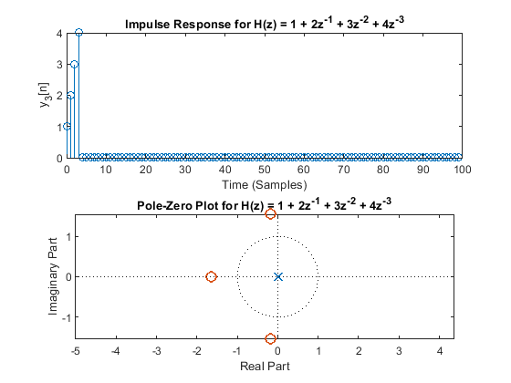 <h2 id="6">2 (d) PLOT IMPULSE RESPONSE AND POLE-ZERO PLOT</h2>
<pre class="codeinput">
<span class="comment">% Define the transfer function H(z) = (1 + 2z^(-2)) / (1 - 0.75z^(-1))</span>
b4 = [1 0 2];  <span class="comment">% Numerator (1 + 2z^-2)</span>
a4 = [1 -0.75];  <span class="comment">% Denominator (1 - 0.75z^-1)</span>
y4 = filter(b4, a4, x1); <span class="comment">% Impulse Response</span>

<span class="comment">% Plot impulse response</span>
figure(4);
subplot(2,1,1);
stem(n, y4);
xlabel(<span class="string">'Time (Samples)'</span>);
ylabel(<span class="string">'y_4[n]'</span>);
title(<span class="string">'Impulse Response for H(z) = (1 + 2z^{-2}) / (1 - 0.75z^{-1})'</span>);

<span class="comment">% Plot Pole-Zero plot</span>
subplot(2,1,2);
pzplot(b4, a4);
title(<span class="string">'Pole-Zero Plot for H(z) = (1 + 2z^{-2}) / (1 - 0.75z^{-1})'</span>);
</pre>
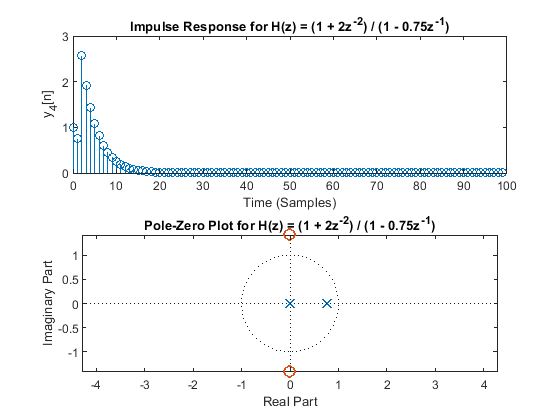 <h2 id="7">2 (e) PLOT IMPULSE RESPONSE AND POLE-ZERO PLOT</h2>
<pre class="codeinput">
<span class="comment">% Define the transfer function H(z) = (1 + 2z^(-2)) / (1 + 1.75z^(-1))</span>
b5 = [1 0 2];  <span class="comment">% Numerator</span>
a5 = [1 1.75];  <span class="comment">% Denominator</span>
y5 = filter(b5, a5, x1); <span class="comment">% Impulse Response</span>

<span class="comment">% Plot impulse response</span>
figure(5);
subplot(2,1,1);
stem(n, y5);
xlabel(<span class="string">'Time (Samples)'</span>);
ylabel(<span class="string">'y_5[n]'</span>);
title(<span class="string">'Impulse Response for H(z) = (1 + 2z^{-2}) / (1 + 1.75z^{-1})'</span>);

<span class="comment">% Plot Pole-Zero plot</span>
subplot(2,1,2);
pzplot(b5, a5);
title(<span class="string">'Pole-Zero Plot for H(z) = (1 + 2z^{-2}) / (1 + 1.75z^{-1})'</span>);
</pre>
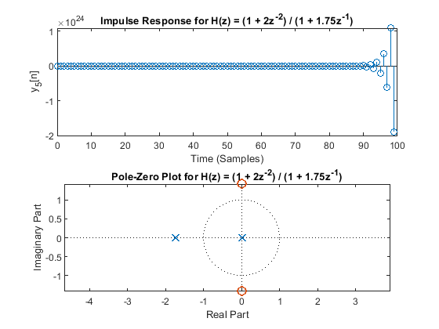 <h2 id="8">2 (f) PLOT IMPULSE RESPONSE AND POLE-ZERO PLOT</h2>
<pre class="codeinput">
<span class="comment">% Define the transfer function H(z) = (1) / [ (1 - (0.85)*exp(j*pi/3)*z^(-2)) * (1 - (0.85)*exp(-j*pi/3)*z^(-2)) ]</span>
b6 = [1];  <span class="comment">% Numerator</span>
a6 = [1 -0.85 0.85^2];  <span class="comment">% Denominator for second-order system with complex conjugate poles</span>
y6 = filter(b6, a6, x1); <span class="comment">% Impulse Response</span>

<span class="comment">% Plot impulse response</span>
figure(6);
subplot(2,1,1);
stem(n, y6);
xlabel(<span class="string">'Time (Samples)'</span>);
ylabel(<span class="string">'y_6[n]'</span>);
title(<span class="string">'Impulse Response for H(z) = 1 / [ (1 - (0.85)e^{j\pi/3}z^{-2})(1 - (0.85)e^{-j\pi/3}z^{-2}) ]'</span>);

<span class="comment">% Plot Pole-Zero plot</span>
subplot(2,1,2);
pzplot(b6, a6);
title(<span class="string">'Pole-Zero Plot for H(z) = 1 / [ (1 - (0.85)e^{j\pi/3}z^{-2})(1 - (0.85)e^{-j\pi/3}z^{-2}) ]'</span>);
</pre>
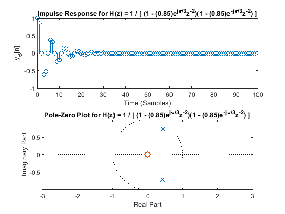 <h2 id="9">2 (g) PLOT IMPULSE RESPONSE AND POLE-ZERO PLOT</h2>
<pre class="codeinput">
<span class="comment">% Define the transfer function H(z) = Product_{m=0}^{2} (1 - e^{-j(2*pi*m/3)}z^{-1})</span>
b7 = 1;

<span class="keyword">for</span> m = 0:2
    b7 = conv(b7, [1 exp(-1j*2*pi*(m-1) / 3)]);
<span class="keyword">end</span>

a7 = [1];  <span class="comment">% Denominator (no feedback)</span>
y7 = filter(b7, a7, x1); <span class="comment">% Impulse Response</span>

<span class="comment">% Plot impulse response</span>
figure(7);
subplot(2,1,1);
stem(n, y7);
xlabel(<span class="string">'Time (Samples)'</span>);
ylabel(<span class="string">'y_7[n]'</span>);
title(<span class="string">'Impulse Response for H(z) = Product_{m=0}^{2} (1 - e^{-j(2\pi m/3)}z^{-1})'</span>);

<span class="comment">% Plot Pole-Zero plot</span>
subplot(2,1,2);
pzplot(b7, a7);
title(<span class="string">'Pole-Zero Plot for H(z) = Product_{m=0}^{2} (1 - e^{-j(2\pi m/3)}z^{-1})'</span>);
</pre>
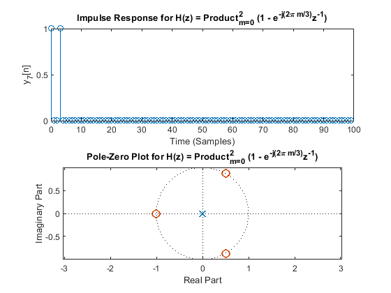 <h2 id="10">2 (h) PLOT IMPULSE RESPONSE AND POLE-ZERO PLOT</h2>
<pre class="codeinput">
<span class="comment">% Define the transfer function H(z) = Product_{m=0}^{Q2} (1 - e^{-j(2*pi*m/3)}z^{-1})</span>
Q1 = 3;
b8 = 1;
a8 = 1;
<span class="keyword">for</span> m = 1:Q1
    a8 = conv(a8, [1 exp(-1j*2*pi*(m-1)/3)]);
<span class="keyword">end</span>
y8 = filter(b8, a8, x1); <span class="comment">% Impulse Response</span>

<span class="comment">% Plot impulse response</span>
figure(8);
subplot(2,1,1);
stem(n, y8);
xlabel(<span class="string">'Time (Samples)'</span>);
ylabel(<span class="string">'y_8[n]'</span>);
title(<span class="string">'Impulse Response for H(z) = Product_{m=0}^{Q2} (1 - e^{-j(2\pi m/3)}z^{-1})'</span>);

<span class="comment">% Plot Pole-Zero plot</span>
subplot(2,1,2);
pzplot(b8, a8);
title(<span class="string">'Pole-Zero Plot for H(z) = Product_{m=0}^{Q2} (1 - e^{-j(2\pi m/3)}z^{-1})'</span>);
</pre>
<pre class="codeoutput">Warning: Using only the real component of complex data. 
</pre>
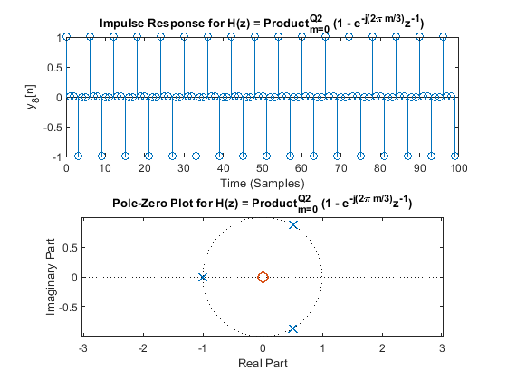 <h2 id="11">QUESTION 3: MORE Z-TRANSFORM</h2>
<h2 id="12">3 (a) ANSWER QUESTION</h2>
<p>For what pole-zero conditions is the impulse response unstable (i.e., goes to &infin; as  &rarr; &infin;)?</p>
<pre class="codeinput">
<span class="comment">% The impulse response is unstable if the system has a pole that is on or outside the unit</span>
<span class="comment">% circle in the z-plane, or when the magnitude of the pole is greater than</span>
<span class="comment">% or equal to 1 bcecause it causes exponential growth in the impulse response over</span>
<span class="comment">% time, causing it to go to infinity.</span>

<span class="comment">% An example of this would be in parts 2(e) since one of the poles are outside the unit circle.</span>
</pre>
<h2 id="13">3 (b) ANSWER QUESTION</h2>
<pre class="codeinput">
<span class="comment">% For what pole-zero conditions is the impulse response stable (i.e., goes to 0 as n&rarr;&infin;)?</span>

<span class="comment">% The impulse response is stable if all poles are inside the unit circle</span>
<span class="comment">% because this means the pole magnitudes are less than one to ensure that</span>
<span class="comment">% the response decays exponentially to approach zero over time.</span>

<span class="comment">% An example would be part 2(d) where the poles from the pole-zero graph are inside the unit circle</span>
</pre>
<h2 id="14">3 (c) ANSWER QUESTION</h2>
<p>For what pole-zero conditions is the impulse response critically stable (i.e., steady amplitude as n&rarr;&infin;)?</p>
<pre class="codeinput">
<span class="comment">% The impulse response is critically stable if the poles are exactly on the</span>
<span class="comment">% unit circle, basically if their magnitude is 1 because this means there</span>
<span class="comment">% is a steady oscillation with constant amplitude</span>

<span class="comment">% An example of this would be 2(h) because the graph is not showing decay</span>
<span class="comment">% or growth, it remains stable and all the poles are exactly on the unit</span>
<span class="comment">% circle in the z plane</span>
</pre>
<h2 id="15">3 (d) ANSWER QUESTION</h2>
<p>For what pole-zero conditions is the impulse response finite in length?</p>
<pre class="codeinput">
<span class="comment">% The impulse response is finite if the system is a finite impulse response</span>
<span class="comment">% (FIR) system when there are no poles or zeros in the system or all poles are at</span>
<span class="comment">% the origin to indicate the the termination after a finite number of</span>
<span class="comment">% samples.</span>

<span class="comment">% An example of this would be 2(a) because it has a finite number of inputs since</span>
<span class="comment">% the only pole it has is at the origin of the unit circle.</span>
</pre>
<h2 id="16">3 (e) ANSWER QUESTION</h2>
<p>For what pole-zero conditions is the impulse response infinite in length?</p>
<pre class="codeinput">
<span class="comment">% Impulse is infinite if the length of the systme is an infinite impulse</span>
<span class="comment">% response (IIR) system where all poles are inside the unit circle and none at the origin.</span>

<span class="comment">% An example of this would be 2(f) because the poles lie inside the unit</span>
<span class="comment">% circle but none at the origin.</span>
</pre>
<h2 id="17">3 (f) ANSWER QUESTION</h2>
<p>For what pole-zero conditions is the impulse response periodic (with a frequency &gt; 0)?</p>
<pre class="codeinput">
<span class="comment">% The impulse response is periodic if the poles are on the unit circle and</span>
<span class="comment">% the magnitude is contant so the system has complex conjugate poles since this causes an oscillatory</span>
<span class="comment">% response with frequency corresponding to angular separation of poles.</span>

<span class="comment">% An example of this would be 2(h) since the poles are on the unit circle</span>
</pre>
<h2 id="18">QUESTION 4: LOAN DIFFERENCE EQUATION</h2>
<h2 id="19">4 (a) PLOT OUTPUT AND POLE-ZERO PLOT</h2>
<pre class="codeinput">
<span class="comment">% Loan parameters</span>
N = 40; <span class="comment">% 40 years</span>
n = 0:(N-1); <span class="comment">% Time vector</span>
x1 = zeros(N, 1);
x1(1) = 150000; <span class="comment">% Initial loan amount at n=0</span>
alpha = 0.1;  <span class="comment">% interest rate</span>
b1 = 1;  <span class="comment">% Numerator (no FIR part)</span>
a1 = [1 -(1 + alpha)];  <span class="comment">% Denominator for IIR system</span>

y1 = filter(b1, a1, x1);

<span class="comment">% Plot the loan balance over time</span>
figure;
subplot(2,1,1);
stem(n, y1);
xlabel(<span class="string">'Time (n)'</span>);
ylabel(<span class="string">'Loan Balance y[n]'</span>);
title(<span class="string">'Loan Balance Over Time (No payments made)'</span>);

<span class="comment">% Pole-Zero plot</span>
subplot(2,1,2);
pzplot(b1, a1);
title(<span class="string">'Pole-Zero Plot for Loan Model (No Payments)'</span>);
</pre>
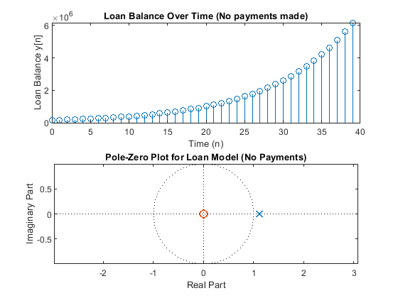 <h2 id="20">4 (b) ANSWER QUESTION</h2>
<pre class="codeinput">
<span class="comment">% The loan will exceed 1 million dollars after some time between 19 - 20 years this can be shown</span>
<span class="comment">% from the plot where the loan value is over the 1 million mark.</span>
</pre>
<h2 id="21">4 (c) PLOT OUTPUT AND POLE-ZERO PLOT</h2>
<pre class="codeinput">
<span class="comment">% Loan parameters</span>
N = 40; <span class="comment">% 40 years</span>
n = 0:(N-1); <span class="comment">% Time vector</span>
R0 = 5; <span class="comment">% starts payments after 5 years</span>
x2 = zeros(N, 1);
x2(1) = 150000; <span class="comment">% Initial loan amount at n=0</span>
alpha = 0.1;  <span class="comment">% interest rate</span>
beta = 0.1;
b2 = [1 zeros(1,R0-1) (-beta*ones(1, N-R0))];  <span class="comment">% Numerator (no FIR part)</span>
a2 = [1 -(1 + alpha)];  <span class="comment">% Denominator for IIR system</span>

y2 = filter(b2, a2, x2);

<span class="comment">% Plot the loan balance over time</span>
figure;
subplot(2,1,1);
stem(n, y2);
xlabel(<span class="string">'Time (n)'</span>);
ylabel(<span class="string">'Loan Balance y[n]'</span>);
title(<span class="string">'Loan Balance Over Time (With Payments)'</span>);

<span class="comment">% Pole-Zero plot</span>
subplot(2,1,2);
pzplot(b2, a2);
title(<span class="string">'Pole-Zero Plot for Loan Model (With Payments)'</span>);
</pre>
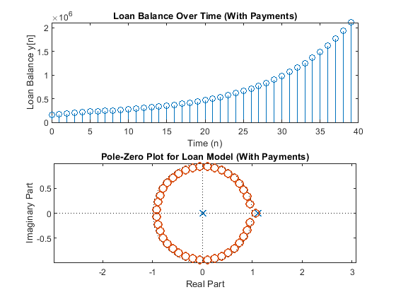 <h2 id="22">4 (d) ANSWER QUESTION</h2>
<pre class="codeinput">
<span class="comment">% The loan goes towards infinity where they would owe 1 million dollars</span>
<span class="comment">% sometime between 30 to 31 years.</span>
</pre>
<h2 id="23">4 (e) ANSWER QUESTION</h2>
<pre class="codeinput">
<span class="comment">% The percentage for the loan to level out would be about 14.641% you get</span>
<span class="comment">% this by taking the current loan amount after the five years and</span>
<span class="comment">% multiplying it by the alpha value to see how much interest is needed.</span>
<span class="comment">% Then you take that value and divide it by the original loan amount that</span>
<span class="comment">% beta is based on since you just need to pay the interest to level out.</span>

<span class="comment">% If you start paying at the start in order to level out you just need to</span>
<span class="comment">% match the percentage of interest they would be the same, 10%. If you delayed</span>
<span class="comment">% payment by 4 years you would need to pay about 13.31% of the original loan to level out, so you</span>
<span class="comment">% would be paying about 3.31% more.</span>
</pre>
<h2 id="24">4 (f) PLOT OUTPUT AND POLE-ZERO PLOT</h2>
<pre class="codeinput">
<span class="comment">% Loan parameters</span>
N = 40; <span class="comment">% 40 years</span>
n = 0:(N-1); <span class="comment">% Time vector</span>
Q = 5; <span class="comment">% starts payments after 5 years</span>
x3 = zeros(N, 1);
x3(1) = 150000; <span class="comment">% Initial loan amount at n=0</span>
alpha = 0.1;  <span class="comment">% interest rate</span>
gamma = 0.1; <span class="comment">% payment rate</span>

<span class="comment">% Filter coefficients</span>
b3 = [1];

<span class="keyword">for</span> m = 1:Q-1
    b3 = [b3 gamma*(1+alpha)^(m-1)]; <span class="comment">% Coefficients from recuuring gamma * (a+alpha)^(m-1)</span>
<span class="keyword">end</span>

a3 = [1 -(1 + alpha) gamma];  <span class="comment">% Denominator for IIR system</span>

y3 = filter(b3, a3, x3);

<span class="comment">% Plot the loan balance over time</span>
figure;
subplot(2,1,1);
stem(n, y3);
xlabel(<span class="string">'Time (n)'</span>);
ylabel(<span class="string">'Loan Balance y[n]'</span>);
title(<span class="string">'Loan Balance Over Time (With Payments)'</span>);

<span class="comment">% Pole-Zero plot</span>
subplot(2,1,2);
pzplot(b3, a3);
title(<span class="string">'Pole-Zero Plot for Loan Model (With Payments)'</span>);
</pre>
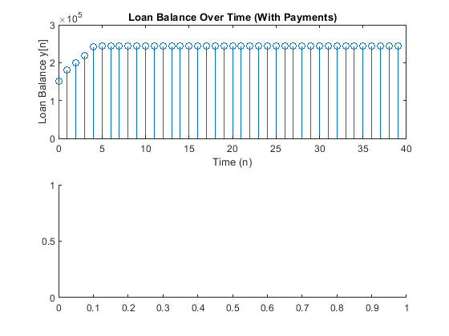 <h2 id="25">4 (g) ANSWER QUESTION</h2>
<pre class="codeinput">
<span class="comment">% The loan levels out at the amount $244,017 at year 9.</span>
</pre>
<h2 id="26">ALL FUNCTIONS SUPPORTING THIS CODE %% % ==================================================================</h2>
<p>NOTE: YOU DO NOT NEED TO ADD COMMENTS IN THE CODE BELOW. WE JUST NEEDED POLE-ZERO PLOTTING CODE AND THUS WROTE IT. ==================================================================</p>
<pre class="codeinput">
<span class="keyword">function</span> pzplot(b,a)
<span class="comment">% PZPLOT(B,A)  plots the pole-zero plot for the filter described by</span>
<span class="comment">% vectors A and B.  The filter is a "Direct Form II Transposed"</span>
<span class="comment">% implementation of the standard difference equation:</span>
<span class="comment">%</span>
<span class="comment">%    a(1)*y(n) = b(1)*x(n) + b(2)*x(n-1) + ... + b(nb+1)*x(n-nb)</span>
<span class="comment">%                          - a(2)*y(n-1) - ... - a(na+1)*y(n-na)</span>
<span class="comment">%</span>

    <span class="comment">% MODIFY THE POLYNOMIALS TO FIND THE ROOTS</span>
    b1 = zeros(max(length(a),length(b)),1); <span class="comment">% Need to add zeros to get the right roots</span>
    a1 = zeros(max(length(a),length(b)),1); <span class="comment">% Need to add zeros to get the right roots</span>
    b1(1:length(b)) = b;    <span class="comment">% New a with all values</span>
    a1(1:length(a)) = a;    <span class="comment">% New a with all values</span>

    <span class="comment">% FIND THE ROOTS OF EACH POLYNOMIAL AND PLOT THE LOCATIONS OF THE ROOTS</span>
    h1 = plot(real(roots(a1)), imag(roots(a1)));
    hold <span class="string">on</span>;
    h2 = plot(real(roots(b1)), imag(roots(b1)));
    hold <span class="string">off</span>;

    <span class="comment">% DRAW THE UNIT CIRCLE</span>
    circle(0,0,1)

    <span class="comment">% MAKE THE POLES AND ZEROS X's AND O's</span>
    set(h1, <span class="string">'LineStyle'</span>, <span class="string">'none'</span>, <span class="string">'Marker'</span>, <span class="string">'x'</span>, <span class="string">'MarkerFaceColor'</span>,<span class="string">'none'</span>, <span class="string">'linewidth'</span>, 1.5, <span class="string">'markersize'</span>, 8);
    set(h2, <span class="string">'LineStyle'</span>, <span class="string">'none'</span>, <span class="string">'Marker'</span>, <span class="string">'o'</span>, <span class="string">'MarkerFaceColor'</span>,<span class="string">'none'</span>, <span class="string">'linewidth'</span>, 1.5, <span class="string">'markersize'</span>, 8);
    axis <span class="string">equal</span>;

    <span class="comment">% DRAW VERTICAL AND HORIZONTAL LINES</span>
    xminmax = xlim();
    yminmax = ylim();
    line([xminmax(1) xminmax(2)],[0 0], <span class="string">'linestyle'</span>, <span class="string">':'</span>, <span class="string">'linewidth'</span>, 0.5, <span class="string">'color'</span>, [1 1 1]*.1)
    line([0 0],[yminmax(1) yminmax(2)], <span class="string">'linestyle'</span>, <span class="string">':'</span>, <span class="string">'linewidth'</span>, 0.5, <span class="string">'color'</span>, [1 1 1]*.1)

    <span class="comment">% ADD LABELS AND TITLE</span>
    xlabel(<span class="string">'Real Part'</span>)
    ylabel(<span class="string">'Imaginary Part'</span>)
    title(<span class="string">'Pole-Zero Plot'</span>)

<span class="keyword">end</span>


<span class="keyword">function</span> circle(x,y,r)
<span class="comment">% CIRCLE(X,Y,R)  draws a circle with horizontal center X, vertical center</span>
<span class="comment">% Y, and radius R.</span>
<span class="comment">%</span>

    <span class="comment">% ANGLES TO DRAW</span>
    ang=0:0.01:2*pi;

    <span class="comment">% DEFINE LOCATIONS OF CIRCLE</span>
    xp=r*cos(ang);
    yp=r*sin(ang);

    <span class="comment">% PLOT CIRCLE</span>
    hold <span class="string">on</span>;
    plot(x+xp,y+yp, <span class="string">':'</span>, <span class="string">'linewidth'</span>, 0.5, <span class="string">'color'</span>, [1 1 1]*.1);
    hold <span class="string">off</span>;

<span class="keyword">end</span>
</pre>
<p class="footer">
<br>
<a href="https://www.mathworks.com/products/matlab/">Published with MATLAB&reg; R2024a</a>
<br>
</p>
</div>
<!--
##### SOURCE BEGIN #####
%% QUESTION 2 
% DO NOT REMOVE THE LINE BELOW
% MAKE SURE 'eel3135_lab07_comment.m' IS IN THE SAME DIRECTORY AS THIS FILE
clear; close all; clc;
type('eel3135_lab07_comment.m')

%% QUESTION 2: Z-TRANSFORM

%% 2 (a) PLOT IMPULSE RESPONSE AND POLE-ZERO PLOT

% Define transfer function H(z) = 0.75 * z^(-4)
b1 = [0 0 0 0 0.75]; % Numerator (delayed by 4 samples)
a1 = [1]; % Denominator

% Generate impulse response
N = 100;
n = 0:(N-1);
x1 = zeros(N,1);
x1(1) = 1; % Impulse response
impulse_response_a = filter(b1, a1, x1); % Output using filter function

% Plot impulse response
figure;
subplot(2, 1, 1);
stem(impulse_response_a);
title('Impulse Response for H(z) = 0.75z^{-4}');
xlabel('Time (samples)');
ylabel('h[n]');

% Plot Pole-Zero plot
subplot(2, 1, 2);
pzplot(b1, a1);
title('Pole-Zero Plot for H(z) = 0.75z^{-4}');

%% 2 (b) PLOT IMPULSE RESPONSE AND POLE-ZERO PLOT

% Define transfer function H(z) = 1 + z^(-1)
b2 = [1 1]; % Numerator (1 + z^-1)
a2 = [1]; % Denominator
impulse_response_b = filter(b2, a2, x1); % Generate impulse response

% Plot impulse response
figure(2);
subplot(2,1,1);
stem(n, impulse_response_b);
xlabel('Time (Samples)');
ylabel('h[n]');
title('Impulse Response for H(z) = 1 + z^{-1}');

% Plot Pole-Zero plot
subplot(2,1,2);
pzplot(b2, a2);
title('Pole-Zero Plot for H(z) = 1 + z^{-1}');

%% 2 (c) PLOT IMPULSE RESPONSE AND POLE-ZERO PLOT

% Define the transfer function H(z) = 1 + 2z^(-1) + 3z^(-2) + 4z^(-3)
b3 = [1 2 3 4];  % Numerator
a3 = [1];        % Denominator (no feedback)
y3 = filter(b3, a3, x1); % Impulse response

% Plot impulse response
figure(3);
subplot(2,1,1);
stem(n, y3);
xlabel('Time (Samples)');
ylabel('y_3[n]');
title('Impulse Response for H(z) = 1 + 2z^{-1} + 3z^{-2} + 4z^{-3}');

% Plot Pole-Zero plot
subplot(2,1,2);
pzplot(b3, a3);
title('Pole-Zero Plot for H(z) = 1 + 2z^{-1} + 3z^{-2} + 4z^{-3}');

%% 2 (d) PLOT IMPULSE RESPONSE AND POLE-ZERO PLOT

% Define the transfer function H(z) = (1 + 2z^(-2)) / (1 - 0.75z^(-1))
b4 = [1 0 2];  % Numerator (1 + 2z^-2)
a4 = [1 -0.75];  % Denominator (1 - 0.75z^-1)
y4 = filter(b4, a4, x1); % Impulse Response

% Plot impulse response
figure(4);
subplot(2,1,1);
stem(n, y4);
xlabel('Time (Samples)');
ylabel('y_4[n]');
title('Impulse Response for H(z) = (1 + 2z^{-2}) / (1 - 0.75z^{-1})');

% Plot Pole-Zero plot
subplot(2,1,2);
pzplot(b4, a4);
title('Pole-Zero Plot for H(z) = (1 + 2z^{-2}) / (1 - 0.75z^{-1})');

%% 2 (e) PLOT IMPULSE RESPONSE AND POLE-ZERO PLOT

% Define the transfer function H(z) = (1 + 2z^(-2)) / (1 + 1.75z^(-1))
b5 = [1 0 2];  % Numerator
a5 = [1 1.75];  % Denominator
y5 = filter(b5, a5, x1); % Impulse Response

% Plot impulse response
figure(5);
subplot(2,1,1);
stem(n, y5);
xlabel('Time (Samples)');
ylabel('y_5[n]');
title('Impulse Response for H(z) = (1 + 2z^{-2}) / (1 + 1.75z^{-1})');

% Plot Pole-Zero plot
subplot(2,1,2);
pzplot(b5, a5);
title('Pole-Zero Plot for H(z) = (1 + 2z^{-2}) / (1 + 1.75z^{-1})');

%% 2 (f) PLOT IMPULSE RESPONSE AND POLE-ZERO PLOT

% Define the transfer function H(z) = (1) / [ (1 - (0.85)*exp(j*pi/3)*z^(-2)) * (1 - (0.85)*exp(-j*pi/3)*z^(-2)) ]
b6 = [1];  % Numerator
a6 = [1 -0.85 0.85^2];  % Denominator for second-order system with complex conjugate poles
y6 = filter(b6, a6, x1); % Impulse Response

% Plot impulse response
figure(6);
subplot(2,1,1);
stem(n, y6);
xlabel('Time (Samples)');
ylabel('y_6[n]');
title('Impulse Response for H(z) = 1 / [ (1 - (0.85)e^{j\pi/3}z^{-2})(1 - (0.85)e^{-j\pi/3}z^{-2}) ]');

% Plot Pole-Zero plot
subplot(2,1,2);
pzplot(b6, a6);
title('Pole-Zero Plot for H(z) = 1 / [ (1 - (0.85)e^{j\pi/3}z^{-2})(1 - (0.85)e^{-j\pi/3}z^{-2}) ]');

%% 2 (g) PLOT IMPULSE RESPONSE AND POLE-ZERO PLOT

% Define the transfer function H(z) = Product_{m=0}^{2} (1 - e^{-j(2*pi*m/3)}z^{-1})
b7 = 1;

for m = 0:2
    b7 = conv(b7, [1 exp(-1j*2*pi*(m-1) / 3)]);
end

a7 = [1];  % Denominator (no feedback)
y7 = filter(b7, a7, x1); % Impulse Response

% Plot impulse response
figure(7);
subplot(2,1,1);
stem(n, y7);
xlabel('Time (Samples)');
ylabel('y_7[n]');
title('Impulse Response for H(z) = Product_{m=0}^{2} (1 - e^{-j(2\pi m/3)}z^{-1})');

% Plot Pole-Zero plot
subplot(2,1,2);
pzplot(b7, a7);
title('Pole-Zero Plot for H(z) = Product_{m=0}^{2} (1 - e^{-j(2\pi m/3)}z^{-1})');

%% 2 (h) PLOT IMPULSE RESPONSE AND POLE-ZERO PLOT

% Define the transfer function H(z) = Product_{m=0}^{Q2} (1 - e^{-j(2*pi*m/3)}z^{-1})
Q1 = 3;
b8 = 1;
a8 = 1;
for m = 1:Q1
    a8 = conv(a8, [1 exp(-1j*2*pi*(m-1)/3)]);
end
y8 = filter(b8, a8, x1); % Impulse Response

% Plot impulse response
figure(8);
subplot(2,1,1);
stem(n, y8);
xlabel('Time (Samples)');
ylabel('y_8[n]');
title('Impulse Response for H(z) = Product_{m=0}^{Q2} (1 - e^{-j(2\pi m/3)}z^{-1})');

% Plot Pole-Zero plot
subplot(2,1,2);
pzplot(b8, a8);
title('Pole-Zero Plot for H(z) = Product_{m=0}^{Q2} (1 - e^{-j(2\pi m/3)}z^{-1})');

%% QUESTION 3: MORE Z-TRANSFORM


%% 3 (a) ANSWER QUESTION
% For what pole-zero conditions is the impulse response unstable (i.e.,
% goes to ∞ as  → ∞)?

% The impulse response is unstable if the system has a pole that is on or outside the unit
% circle in the z-plane, or when the magnitude of the pole is greater than
% or equal to 1 bcecause it causes exponential growth in the impulse response over
% time, causing it to go to infinity.

% An example of this would be in parts 2(e) since one of the poles are outside the unit circle.

%% 3 (b) ANSWER QUESTION

% For what pole-zero conditions is the impulse response stable (i.e., goes to 0 as n→∞)?

% The impulse response is stable if all poles are inside the unit circle
% because this means the pole magnitudes are less than one to ensure that
% the response decays exponentially to approach zero over time. 

% An example would be part 2(d) where the poles from the pole-zero graph are inside the unit circle 

%% 3 (c) ANSWER QUESTION
% For what pole-zero conditions is the impulse response critically stable (i.e., steady amplitude as n→∞)?

% The impulse response is critically stable if the poles are exactly on the
% unit circle, basically if their magnitude is 1 because this means there
% is a steady oscillation with constant amplitude

% An example of this would be 2(h) because the graph is not showing decay
% or growth, it remains stable and all the poles are exactly on the unit
% circle in the z plane

%% 3 (d) ANSWER QUESTION
% For what pole-zero conditions is the impulse response finite in length?

% The impulse response is finite if the system is a finite impulse response
% (FIR) system when there are no poles or zeros in the system or all poles are at
% the origin to indicate the the termination after a finite number of
% samples. 

% An example of this would be 2(a) because it has a finite number of inputs since 
% the only pole it has is at the origin of the unit circle. 

%% 3 (e) ANSWER QUESTION
% For what pole-zero conditions is the impulse response infinite in length?

% Impulse is infinite if the length of the systme is an infinite impulse
% response (IIR) system where all poles are inside the unit circle and none at the origin.

% An example of this would be 2(f) because the poles lie inside the unit
% circle but none at the origin.

%% 3 (f) ANSWER QUESTION
% For what pole-zero conditions is the impulse response periodic (with a frequency > 0)?

% The impulse response is periodic if the poles are on the unit circle and
% the magnitude is contant so the system has complex conjugate poles since this causes an oscillatory
% response with frequency corresponding to angular separation of poles. 

% An example of this would be 2(h) since the poles are on the unit circle

%% QUESTION 4: LOAN DIFFERENCE EQUATION

%% 4 (a) PLOT OUTPUT AND POLE-ZERO PLOT

% Loan parameters
N = 40; % 40 years
n = 0:(N-1); % Time vector
x1 = zeros(N, 1);
x1(1) = 150000; % Initial loan amount at n=0
alpha = 0.1;  % interest rate
b1 = 1;  % Numerator (no FIR part)
a1 = [1 -(1 + alpha)];  % Denominator for IIR system

y1 = filter(b1, a1, x1);

% Plot the loan balance over time
figure;
subplot(2,1,1);
stem(n, y1);
xlabel('Time (n)');
ylabel('Loan Balance y[n]');
title('Loan Balance Over Time (No payments made)');

% Pole-Zero plot
subplot(2,1,2);
pzplot(b1, a1);
title('Pole-Zero Plot for Loan Model (No Payments)');

%% 4 (b) ANSWER QUESTION

% The loan will exceed 1 million dollars after some time between 19 - 20 years this can be shown
% from the plot where the loan value is over the 1 million mark.

%% 4 (c) PLOT OUTPUT AND POLE-ZERO PLOT

% Loan parameters
N = 40; % 40 years
n = 0:(N-1); % Time vector
R0 = 5; % starts payments after 5 years
x2 = zeros(N, 1);
x2(1) = 150000; % Initial loan amount at n=0
alpha = 0.1;  % interest rate
beta = 0.1;
b2 = [1 zeros(1,R0-1) (-beta*ones(1, N-R0))];  % Numerator (no FIR part)
a2 = [1 -(1 + alpha)];  % Denominator for IIR system

y2 = filter(b2, a2, x2);

% Plot the loan balance over time
figure;
subplot(2,1,1);
stem(n, y2);
xlabel('Time (n)');
ylabel('Loan Balance y[n]');
title('Loan Balance Over Time (With Payments)');

% Pole-Zero plot
subplot(2,1,2);
pzplot(b2, a2);
title('Pole-Zero Plot for Loan Model (With Payments)');

%% 4 (d) ANSWER QUESTION

% The loan goes towards infinity where they would owe 1 million dollars
% sometime between 30 to 31 years. 

%% 4 (e) ANSWER QUESTION

% The percentage for the loan to level out would be about 14.641% you get
% this by taking the current loan amount after the five years and
% multiplying it by the alpha value to see how much interest is needed.
% Then you take that value and divide it by the original loan amount that
% beta is based on since you just need to pay the interest to level out. 

% If you start paying at the start in order to level out you just need to
% match the percentage of interest they would be the same, 10%. If you delayed
% payment by 4 years you would need to pay about 13.31% of the original loan to level out, so you
% would be paying about 3.31% more.

%% 4 (f) PLOT OUTPUT AND POLE-ZERO PLOT

% Loan parameters
N = 40; % 40 years
n = 0:(N-1); % Time vector
Q = 5; % starts payments after 5 years
x3 = zeros(N, 1);
x3(1) = 150000; % Initial loan amount at n=0
alpha = 0.1;  % interest rate
gamma = 0.1; % payment rate

% Filter coefficients
b3 = [1];

for m = 1:Q-1
    b3 = [b3 gamma*(1+alpha)^(m-1)]; % Coefficients from recuuring gamma * (a+alpha)^(m-1)
end

a3 = [1 -(1 + alpha) gamma];  % Denominator for IIR system

y3 = filter(b3, a3, x3);

% Plot the loan balance over time
figure;
subplot(2,1,1);
stem(n, y3);
xlabel('Time (n)');
ylabel('Loan Balance y[n]');
title('Loan Balance Over Time (With Payments)');

% Pole-Zero plot
subplot(2,1,2);
pzplot(b3, a3);
title('Pole-Zero Plot for Loan Model (With Payments)');

%% 4 (g) ANSWER QUESTION

% The loan levels out at the amount $244,017 at year 9. 

%% ALL FUNCTIONS SUPPORTING THIS CODE %%
% ==================================================================
% NOTE: YOU DO NOT NEED TO ADD COMMENTS IN THE CODE BELOW. WE JUST 
% NEEDED POLE-ZERO PLOTTING CODE AND THUS WROTE IT. 
% ==================================================================

function pzplot(b,a)
% PZPLOT(B,A)  plots the pole-zero plot for the filter described by
% vectors A and B.  The filter is a "Direct Form II Transposed"
% implementation of the standard difference equation:
% 
%    a(1)*y(n) = b(1)*x(n) + b(2)*x(n-1) + ... + b(nb+1)*x(n-nb)
%                          - a(2)*y(n-1) - ... - a(na+1)*y(n-na)
% 

    % MODIFY THE POLYNOMIALS TO FIND THE ROOTS 
    b1 = zeros(max(length(a),length(b)),1); % Need to add zeros to get the right roots
    a1 = zeros(max(length(a),length(b)),1); % Need to add zeros to get the right roots
    b1(1:length(b)) = b;    % New a with all values
    a1(1:length(a)) = a;    % New a with all values

    % FIND THE ROOTS OF EACH POLYNOMIAL AND PLOT THE LOCATIONS OF THE ROOTS
    h1 = plot(real(roots(a1)), imag(roots(a1)));
    hold on;
    h2 = plot(real(roots(b1)), imag(roots(b1)));
    hold off;

    % DRAW THE UNIT CIRCLE
    circle(0,0,1)
    
    % MAKE THE POLES AND ZEROS X's AND O's
    set(h1, 'LineStyle', 'none', 'Marker', 'x', 'MarkerFaceColor','none', 'linewidth', 1.5, 'markersize', 8); 
    set(h2, 'LineStyle', 'none', 'Marker', 'o', 'MarkerFaceColor','none', 'linewidth', 1.5, 'markersize', 8); 
    axis equal;
    
    % DRAW VERTICAL AND HORIZONTAL LINES
    xminmax = xlim();
    yminmax = ylim();
    line([xminmax(1) xminmax(2)],[0 0], 'linestyle', ':', 'linewidth', 0.5, 'color', [1 1 1]*.1)
    line([0 0],[yminmax(1) yminmax(2)], 'linestyle', ':', 'linewidth', 0.5, 'color', [1 1 1]*.1)
    
    % ADD LABELS AND TITLE
    xlabel('Real Part')
    ylabel('Imaginary Part')
    title('Pole-Zero Plot')
    
end


function circle(x,y,r)
% CIRCLE(X,Y,R)  draws a circle with horizontal center X, vertical center
% Y, and radius R. 
%
    
    % ANGLES TO DRAW
    ang=0:0.01:2*pi; 
    
    % DEFINE LOCATIONS OF CIRCLE
    xp=r*cos(ang);
    yp=r*sin(ang);
    
    % PLOT CIRCLE
    hold on;
    plot(x+xp,y+yp, ':', 'linewidth', 0.5, 'color', [1 1 1]*.1);
    hold off;
    
end
##### SOURCE END #####
-->
</body>
</html>
